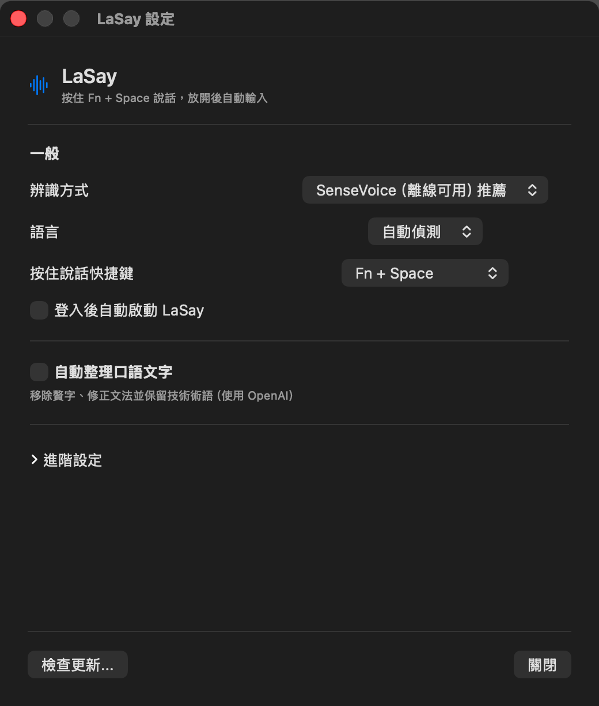

給開發者的語音輸入工具。Voice input for developers.
按住 Fn+Space，用中文、英文或中英混合說話；放開後，LaSay 會把文字直接輸入到游標位置，同時保留 React、FastAPI 等技術術語。Hold Fn+Space and speak in English, Chinese, or both. Release to write directly at the cursor, with technical terms such as React and FastAPI intact.
適用於 Apple Silicon Mac · 需要 macOS 13.5 或更新版本 · MIT 開源For Apple silicon Macs · Requires macOS 13.5 or later · Open source under MIT
使用 Homebrew 安裝。Install with Homebrew.
把這行指令貼到「終端機」來安裝。第一次啟動時，LaSay 需要你一次授予麥克風與輔助使用權限，並確認實際輸入成功。Paste this command into Terminal to install. On first launch, LaSay requires both Microphone and Accessibility once, then verifies a real insertion.
brew tap tamio0800/tap && brew install --cask lasay
一個快捷鍵，完成語音輸入。One shortcut for voice input.
完成兩個權限與一次實際輸入測試後，就能在任何文字欄位直接使用。After granting both permissions and completing one real typing test, use LaSay in any text field.
- 01
按住快捷鍵Hold the shortcut
預設是 Fn+Space，也能在設定中改成 Control+Space 或 Option+Space。The default is Fn+Space. You can also choose Control+Space or Option+Space in Settings.
- 02
自然說話Speak naturally
中文、英文可以混著說，技術術語不用刻意改念法。Speak in English, Chinese, or both. You do not need to change how you say technical terms.
- 03
放開，直接輸入Release to insert
授予一次麥克風與輔助使用權限後，LaSay 會把文字直接輸入到游標位置；若自動輸入失敗，按 Command+V 使用剪貼簿備援。After you grant Microphone and Accessibility once, LaSay writes directly at the cursor. If automatic insertion fails, press Command+V to use the clipboard fallback.
選擇在本機或 OpenAI 辨識。Choose local or OpenAI transcription.
本機模式不會上傳音訊；雲端模式使用你的 OpenAI API Key。Local mode keeps audio on your Mac. Cloud mode uses your OpenAI API key.
本機模式Local mode
SenseVoiceSmall 模型已內建，音訊只在你的 Mac 上處理，不需要 API Key。SenseVoiceSmall is included. Audio stays on your Mac, and no API key is required.
SenseVoiceSmall · offlineOpenAI 雲端模式OpenAI cloud mode
LaSay 會把錄音傳送到 OpenAI 進行辨識。你的 API Key 會儲存在 macOS Keychain。LaSay sends recordings to OpenAI for transcription. Your API key is stored in macOS Keychain.
OpenAI · optional · KeychainLaSay 不需要帳號，也不會同步你的文字或設定。LaSay does not require an account or sync your text or settings.
保留技術術語與程式名稱。Keep technical terms and code names intact.
LaSay 內建技術術語修正，能保留框架名稱、程式碼識別字和常見縮寫。LaSay includes technical-term corrections for framework names, code identifiers, and common abbreviations.
你說You say
「幫我 refactor 這個 useEffect hook，然後在 FastAPI endpoint 加上 retry logic。」“Refactor this useEffect hook, then add retry logic to the FastAPI endpoint.”
LaSay 產生LaSay writes
幫我 refactor 這個 useEffect hook，然後在 FastAPI endpoint 加上 retry logic。Refactor this useEffect hook, then add retry logic to the FastAPI endpoint.
設定保持簡單。Settings stay simple.
第一次啟動會引導你授予麥克風與輔助使用權限，並完成一次實際輸入測試；之後文字預設會直接輸入到游標位置。First launch guides you through Microphone and Accessibility, then verifies one real insertion. After that, text goes directly to the cursor by default.
